Bitácora de Laboratorio
Implementación y análisis experimental de cinco circuitos analógicos fundamentales. Cada práctica integró diseño teórico, simulación en NI Multisim y verificación con osciloscopio RIGOL.
Clamper Activo — LM324
Sujetador de nivel DC que desplaza la señal de entrada sin alterar su forma de onda. Operación correcta para frecuencias superiores a 100 Hz con la constante de tiempo τ = RC = 0,5 s.
- C = 10 µF · R = 50 kΩ · τ = 0,5 s
- Op-Amp: LM324 · Vref = 5 V
Amplificador Clase B — Push-Pull
Configuración push-pull con transistores 2N3904 (NPN) y 2N3906 (PNP). El diodo Zener de 5,1 V elimina la distorsión de cruce por cero, elevando la eficiencia energética.
- 2N3904 (NPN) + 2N3906 (PNP)
- Zener 5,1 V · VCC = 12 V · RL = 10 Ω
Convertidor DAC R-2R — 4 bits
Red escalera R-2R de 4 bits con transistores 2N2222 como interruptores digitales y LM358 a la salida. Rango de salida analógica de 0 V a 4,69 V para Vref = 5 V.
- R = 1 kΩ · 2R = 2 kΩ · 4 bits
- 2N2222 (switches) · LM358 (salida)
Filtro Sallen-Key Pasa-Altas
Filtro activo de 2.º orden con topología VCVS. Verificado experimentalmente con diagrama de Bode en Python: fc medida en rango 40–50 kHz, coherente con el diseño teórico.
- R = 3,3 kΩ · C = 1 nF · LM324N
- Alimentación bipolar necesaria
Inductor Simulado — 560 mH
Reemplaza el inductor físico mediante Op-Amp + resistores + capacitor. Validado con filtro RL a fc = 2,84 kHz; la inductancia experimental fue de 566,39 mH con un error de solo −1,14%.
- R1 = 56 Ω · R2 = 100 kΩ · C = 100 nF
- Error experimental: −1,14% · Lineal ✓
Galería — Prácticas de laboratorio
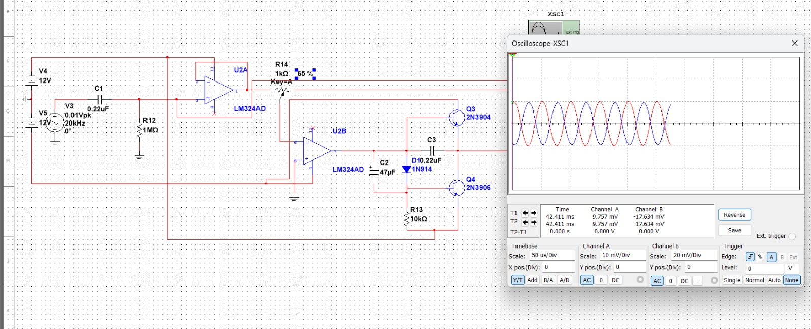
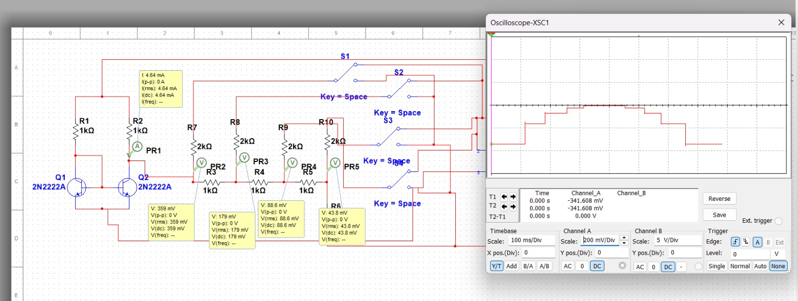

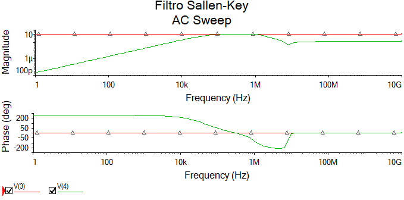
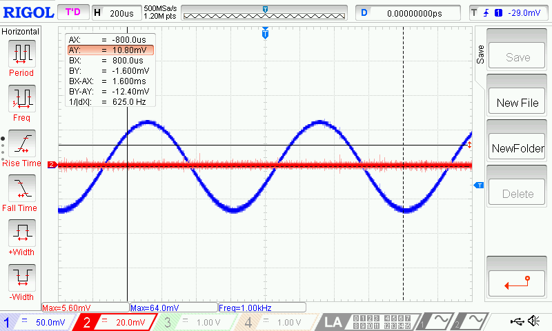
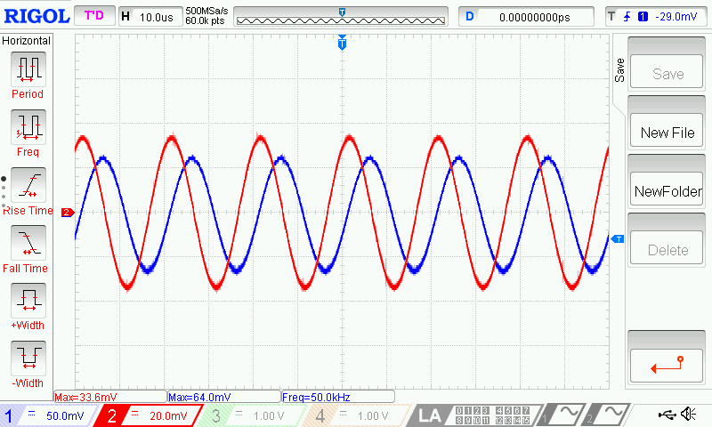
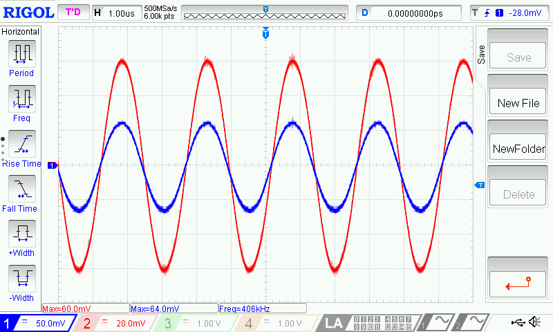
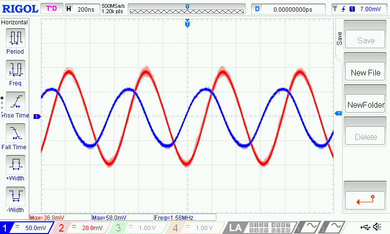
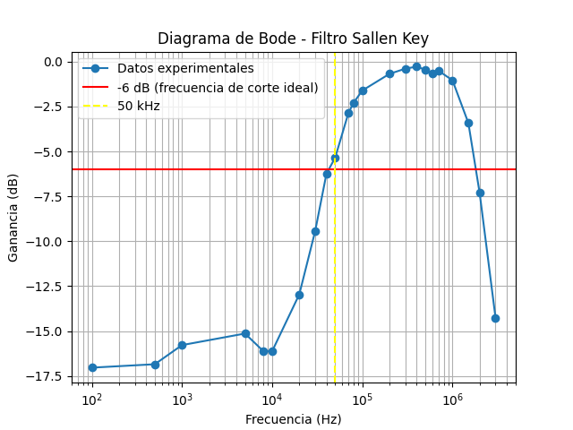
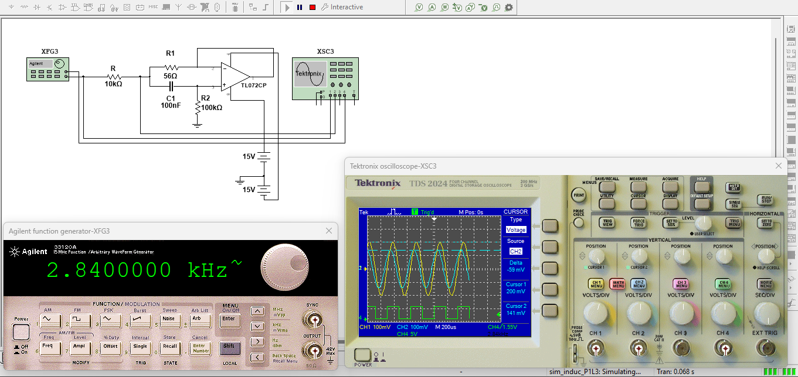
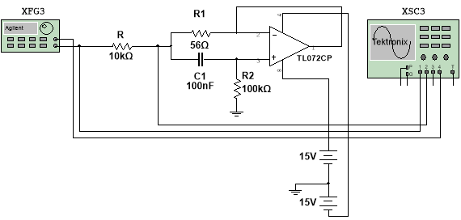
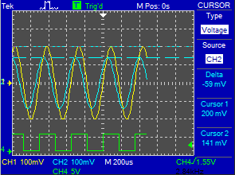